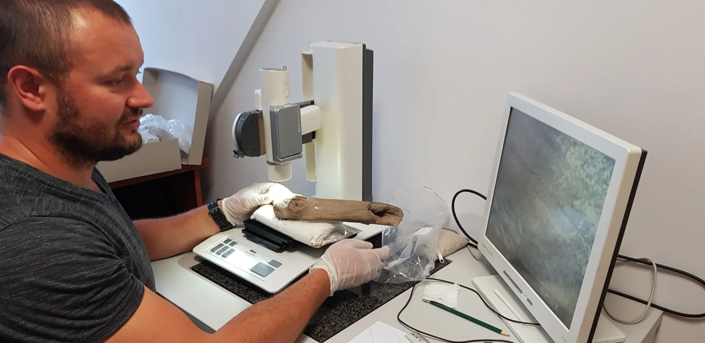
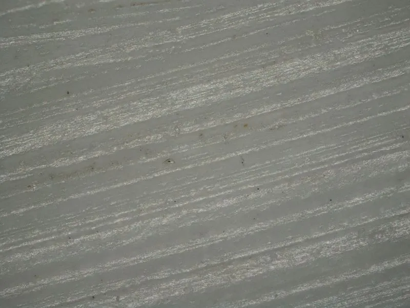
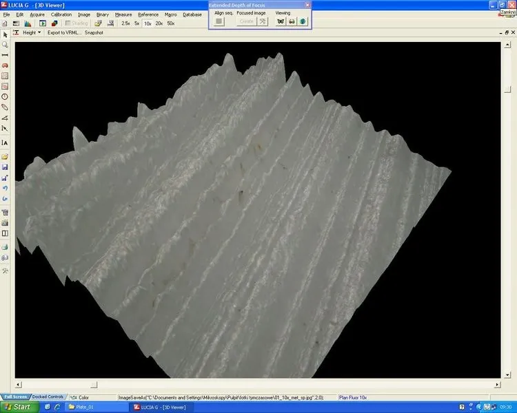
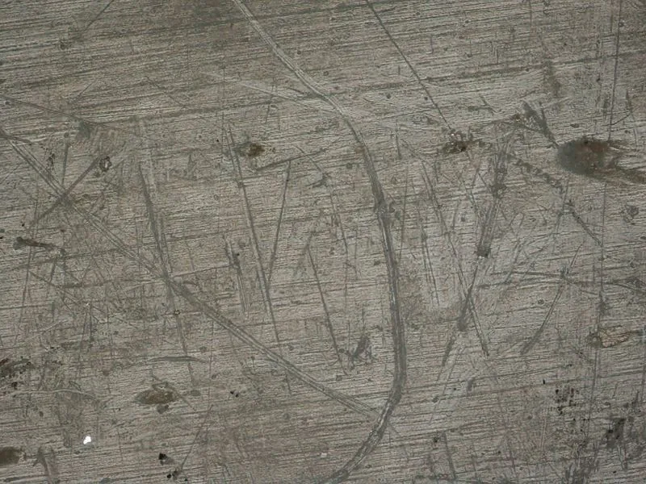
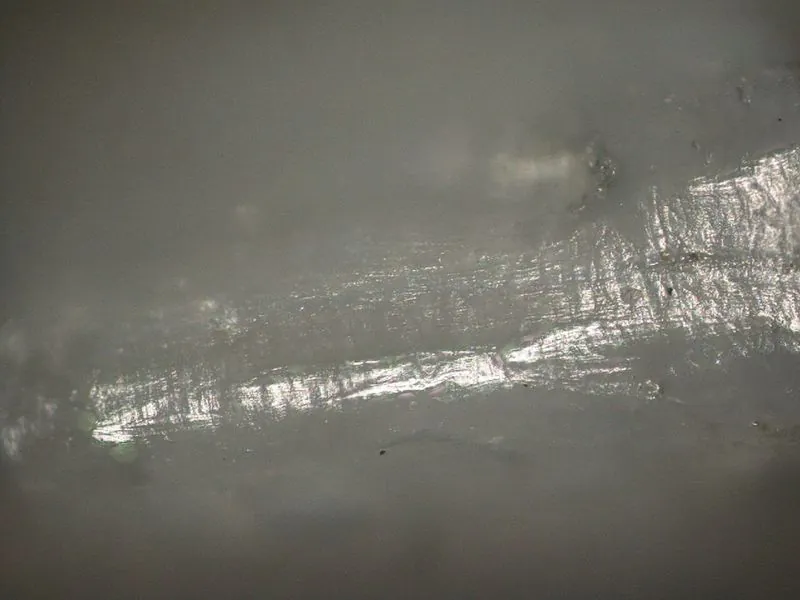
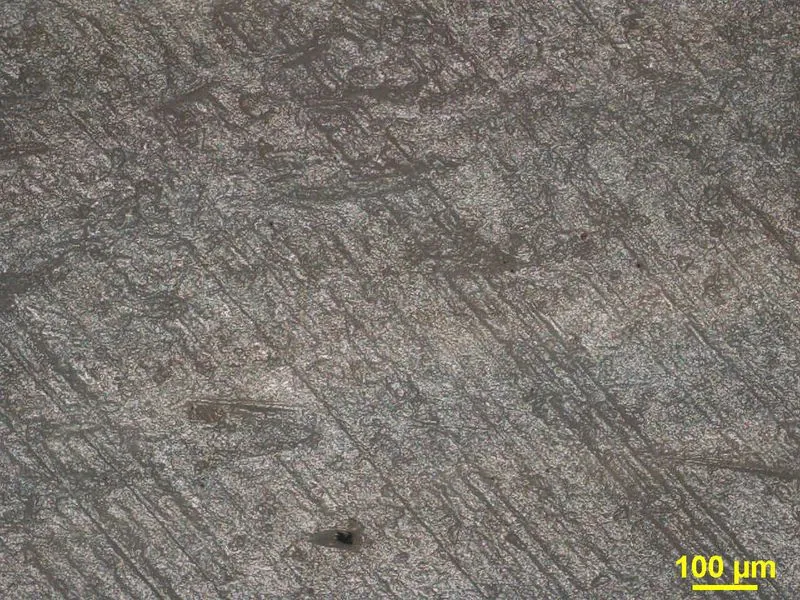
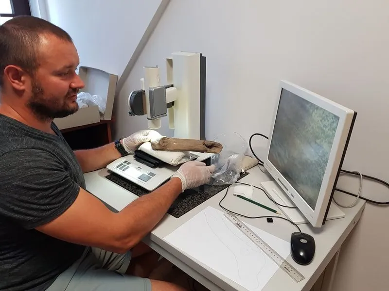
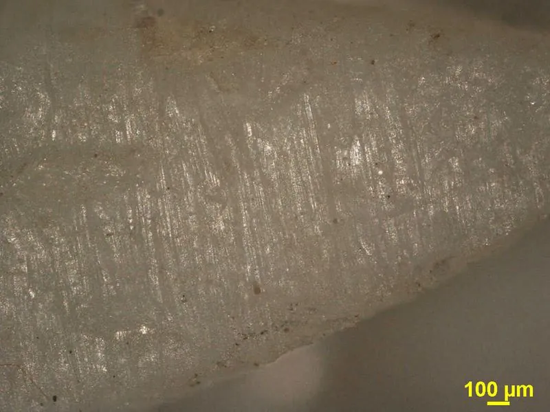
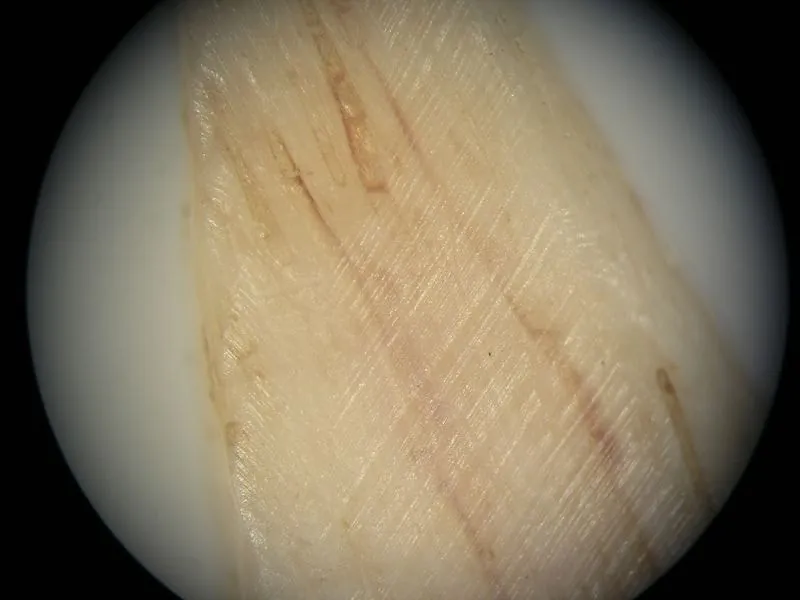

Badania naukowe i analizy zabytków
Bardzo dobrym wyznacznikiem naszej najwyższej jakości są badania naukowe, nad którymi pracowaliśmy podczas wielu lat działalności. Nieustannie staramy się rozwijać naszą wiedzę i dokształcać się w zakresie archeologii. Jeśli chcesz przekonać się o naszym obyciu oraz pasji, jaką obdarzyliśmy archeologię, to w tej zakładce znajdziesz publikacje wydane z naszym udziałem oraz te, które dopiero są w druku. Zapraszamy do zapoznania się ze szczegółami!

https://wroc.academia.edu/MarcinDiakowski
Badania naukowe: zdjęcia z naszej pracy







Pozostałe usługi archeologiczne


Porozmawiajmy o Twoim projekcie
Działamy przede wszystkim na terenie województwa dolnośląskiego i opolskiego.